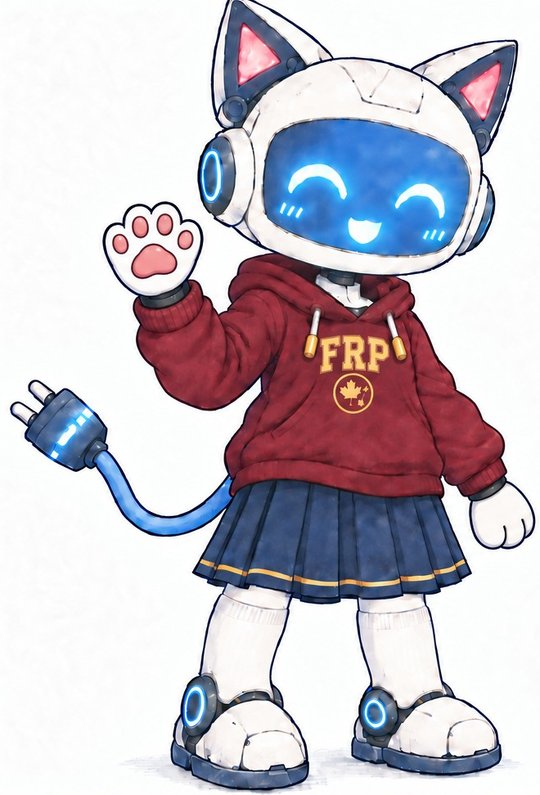
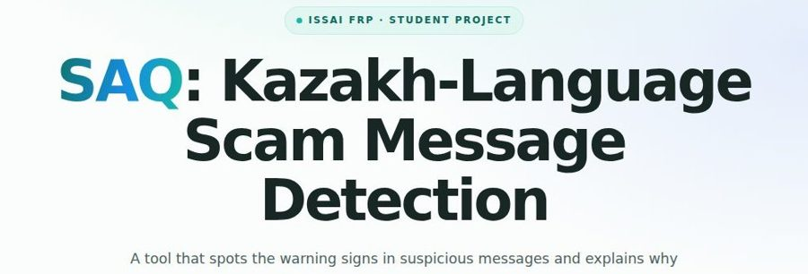
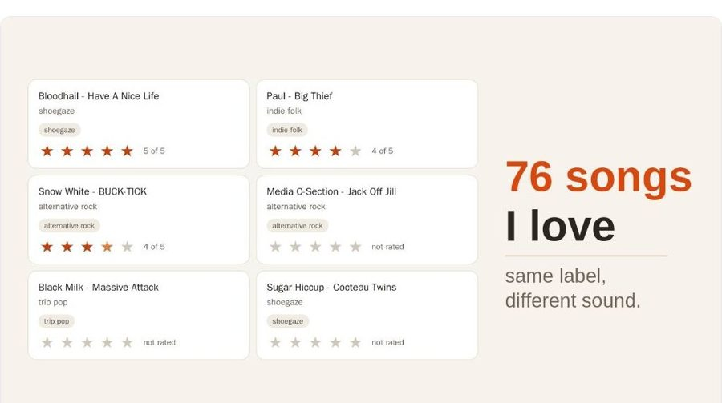
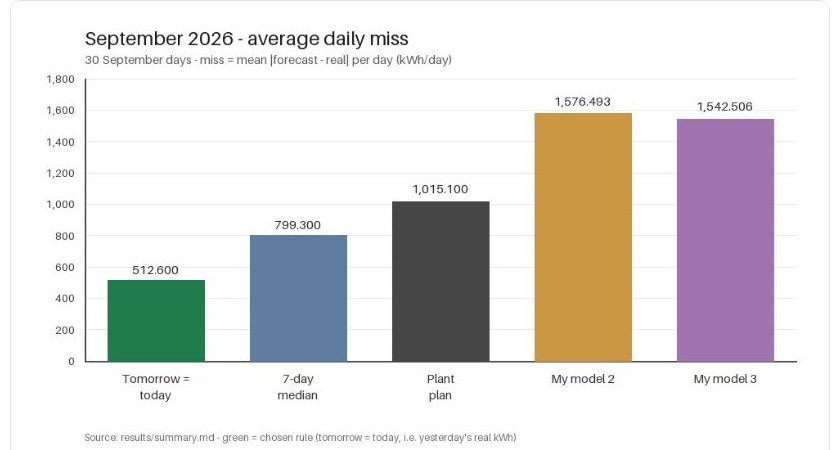
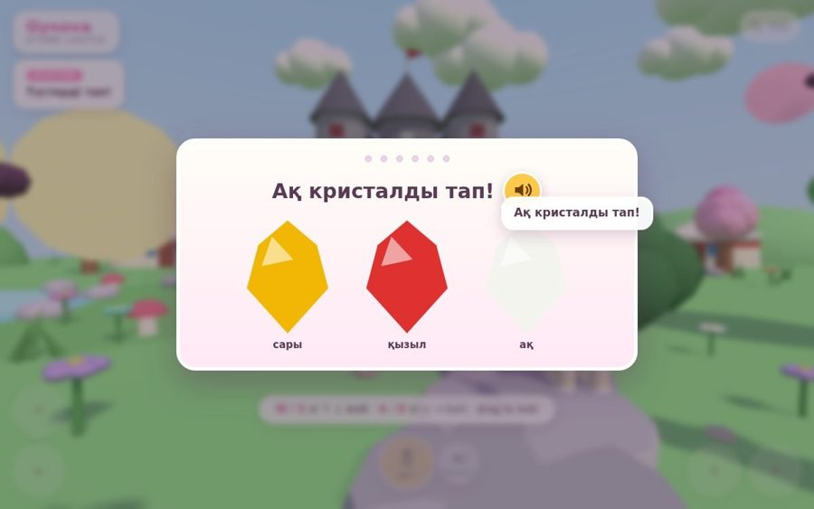
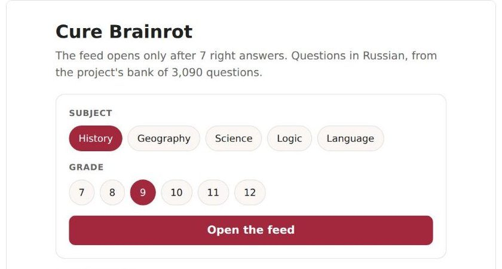
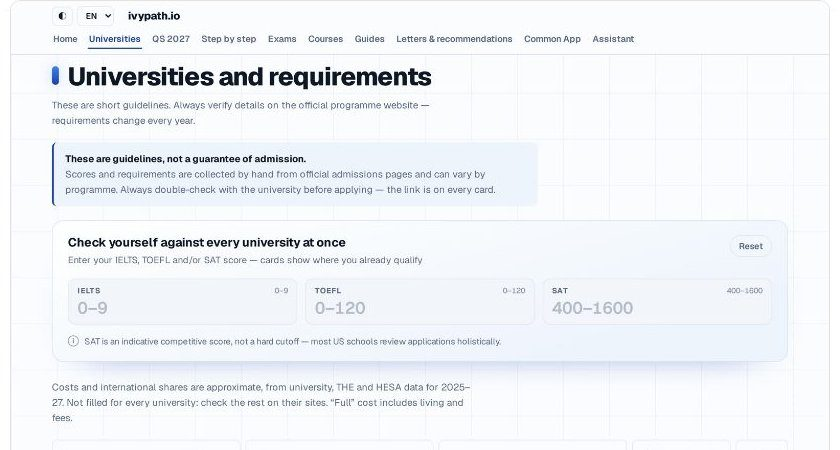
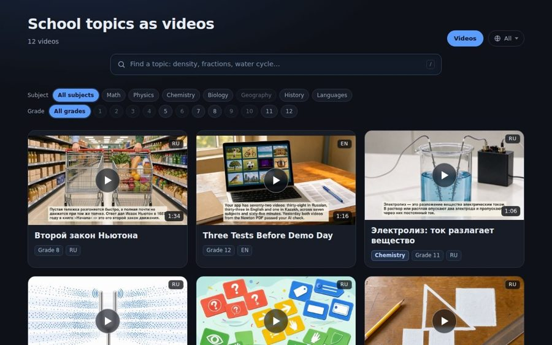
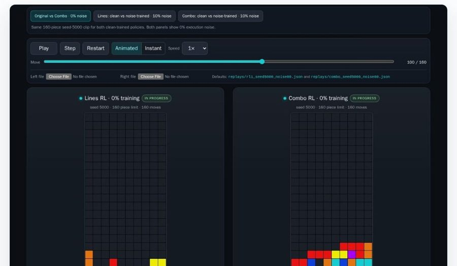
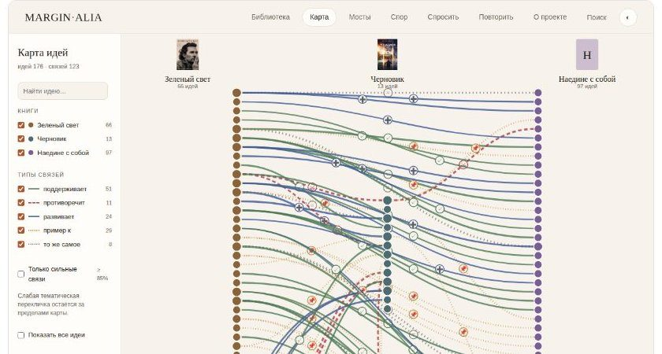

ISSAI Fall Research Program 2026, Nazarbayev University, 24–31 October
FRP 2026: AI Engineering track
About 20 high-school students, 8 days, one AI agent each. How we ran the track, what the students built, and the lecture slides.
How it was set up AI services Student projects Lecture slides Program video

FRP in my words
Around 30 students applied for the program, and about 20 of them were in our AI Engineering track. There we wanted to teach students how to use AI agents to build a project or do research, and how to share that work. I would say it is what we do day to day, only at a smaller scale in the number of GPUs and in the capabilities of the AI agents.
Knowing that I would need to switch context between all of them during the program, I came up with these bricks:
- Online IDE: no SSH connection needed, and some students could easily work on their tablets.
- Docker isolation with a "simulated Slurm": I did not have to worry about data, RAM or GPU management.
- Integrated code assistant: students could iterate fast and, instead of waiting for me to fix something, try to fix it with the assistant.
The working pipeline: one student chooses a prepared idea to implement, and we iterate on it for 8 days. Repeat for n students.
What helped a lot during the program was the students' digital history of what they were doing. How? It allowed me to analyse a) where they struggle, b) what their current progress is, and c) how they use AI agents.
Without direct access to each prompt and the history of what they were doing, it would take me a few hours per student each day. That is simply impossible, because there were too many of them.
With this pipeline, at the end of each day I could analyse the students' progress with AI agents and prepare the next day's plans and tasks. For some students I tested video explanations of the things they were doing, like "how embeddings work for your project". It went pretty well, and some students really liked this way of explaining, because it was personalised and used text, audio and visuals.
If I could go back and change some parts, I would:
- Find a way to replace myself more with
vladimir_agent, as I was often the bottleneck when 3 students had problems at once and I had to switch between them. - Use peer learning more actively. During this FRP I noticed how much it helped students, compared with students who worked alone.
It was quite an interesting experience. Thanks to the students for their good work.
The track in numbers
| ~20 students | in the AI Engineering track, high-school students from Kazakhstan and abroad. |
| 8 days | 24–31 October 2026: six lecture days, then a Demo Day with 3-minute talks. |
| 30 workspaces | one isolated Docker container each, opened in any browser. |
| 16 V100 | GPUs for student training jobs, shared through a small queue. |
| ~20 H100 | GPUs for the class models: the coding model, speech and images. |
| 11 projects | with a public page, demo or paper, linked below. |
How it was set up
Every student had the same workspace: a browser tab with VS Code and an AI agent, an isolated container behind it, and a GPU queue for training. Every evening the workspaces were scanned and each student got a plan for the next day.
VS Code in the browser
Each student had code-server (VS Code in a browser tab) at a personal link with a password. They got both on a printed card with a QR code. Nothing to install, no SSH: a laptop, a tablet or even a phone was enough.
One container per student
Every workspace was its own container: 4 CPUs, 16 GB of RAM, no root, a read-only system and a home folder that survived restarts. Students could not see each other's files. A watchdog stopped a workspace if its folder grew past 50 GB.
GPU jobs like on a real cluster
sbatch, squeue and scancel worked inside the workspace. Each job started a fresh container with 1 V100, 6 CPUs and 24 GB of RAM: 15 minutes by default, 30 at most, 1 running and 2 waiting jobs per student. Students with nothing running went first.
OpenCode with DeepSeek
OpenCode ran in every workspace on DeepSeek-V4.1-Flash, served with vLLM on two 8×H100 nodes. Claude Code and Codex were installed too, pointed at the same class model. A proxy identified each workspace, so students never held a model key.
# inside a workspace: train on a GPU, then read the log
sbatch --wrap "python3 train.py"
squeue # your job, and others as "(another student)"
cat ~/work/jobs/<id>.log| Command | What the agent does |
|---|---|
/ask | Asks up to 5 questions about the idea. No code yet. |
/tasks | Writes the tasks for the whole week, to show the mentor. |
/plan | Writes the goal, the input, how to check it and the limits, then a short plan. |
/build | Builds only the next small step. |
/check | Tests its own work and shows proof, not just "done". |
/fix | Fixes what the student saw, from a description or the red error. |
/save | A git checkpoint, pushed to GitHub when connected. |
/share | A public link to the page that anyone can open. |
The agents also had skills for web search, checking a page in a real browser, image generation, embeddings, face tracking, speech, and a small RL training example (GRPO). Speech recognition and text-to-speech (Whisper large-v3-turbo, GigaAM for Kazakh, OmniVoice) and an image model ran on the H100s as class services.
Class AI services: speech, images and more
Besides the coding agent, every workspace could call a set of AI models through one OpenAI-style API. No keys: a proxy recognised each workspace, and the same routes worked from the student's web pages through their login. The models ran on the H100s as shared class services, so students could add voice, pictures or search to a project in a few lines.
| Service | Route | Model | Good to know |
|---|---|---|---|
| Chat and photos | /v1/chat/completions | DeepSeek-V4.1-Flash | The same model as the coding agent. It also reads photos (a menu, a chart, a screenshot): 10–40 s per photo. |
| Speech to text | /v1/audio/transcriptions | GigaAM for Kazakh, Whisper large-v3-turbo for Russian and English | Word timings and "who said what" speaker labels. The frp-asr command transcribes any audio or video file. |
| Text to speech | /v1/audio/speech | Piper, OmniVoice | Kazakh, Russian and English. Piper answers in under a second; OmniVoice sounds nicer but is slower. |
| Images | /v1/images/generations | FLUX.3 klein, with a prompt rewriter | 3–8 s per picture, up to 10 reference images, 300 pictures a day per student. The frp-img command works in the terminal. |
| Embeddings | /v1/embeddings | Qwen3-Embedding-0.6B | Find similar texts by meaning, across Kazakh, Russian and English: search, matching, recommendations. |
# a whole voice bot in three requests: hear, think, speak
curl $API/audio/transcriptions -F file=@question.wav -F model=gigaam -F language=kk
curl $API/chat/completions -H "Content-Type: application/json" \
-d '{"model": "DeepSeek-V4.1-Flash", "messages": [{"role": "user", "content": "..."}]}'
curl $API/audio/speech -H "Content-Type: application/json" \
-d '{"input": "Сәлем!", "language": "kk", "model": "omnivoice"}' -o answer.wavStudents used them in their projects: the Oynova game asks its questions with pre-made OmniVoice audio, the presentation coach measures speaking pace and filler words from Whisper word timings, and the school-topic videos are narrated by a speech model. Each service came with a short guide written for students, and the agent had skills for them, so "add a Kazakh voice to my page" was a normal request.
The daily loop
- Day: build with the agentEach student worked on their own project with OpenCode, and asked the mentor when stuck after trying alone first.
- Evening: scan every workspaceA read-only script collected the day: changed files, git commits, the prompts sent to OpenCode, Claude Code and Codex, GPU jobs and published pages.
- Night: plan the next dayAI agents summarised where each student was stuck, their progress and how they used the agent. Then they drafted a plan for every student or team. Plans went into a workspace only after the mentor checked them.
Sharing the work
Every project had to end with something other people can open. Students got:
- A one-command public link for any page in the workspace, for classmates, parents and Demo Day.
- Guides and short screen videos for connecting GitHub and Hugging Face, and a project-page template for GitHub Pages ("only real numbers").
- A paper kit: a LaTeX template for Overleaf, and for about 12 projects a personal paper guide with checked references.
- A Demo Day template: 7 slides for a 3-minute talk.
Student projects
Projects with a public page, demo or paper. All of them were built by the students with AI agents during the 8 days.




Oynova
A voice-led 3D game, in the browser and in VR, that teaches young children Kazakh color words. Team of two.

- Chrome extension
Cure Brainrot: browser extension
Counts time on TikTok, YouTube Shorts and Instagram Reels, closes them at a daily limit, and gives 20 more minutes for a passed quiz. Team of two.

ivypath.io
Requirements, costs and deadlines of 734 universities in 35 countries, with a score check and an AI helper.



- Webcam 3D trainer
Lecture slides
One lecture a day, then work on the projects. The PDFs keep the slides but not the embedded screen recordings and audio clips. Day 4 opens in the browser as a slide deck: use the arrow keys.
| Day | Lecture | Slides |
|---|---|---|
| 1 · 24 Oct | Opening, choosing a project, first steps with the agent | – |
| 2 · 25 Oct | How does AI work inside? How do we work with AI agents? | 58 |
| 3 · 26 Oct | How does a computer hear and speak? | 106 |
| 4 · 27 Oct | Introduction to computer vision: from pixels to vision agents (Arailym Raikhankyzy) | 52 |
| 5 · 28 Oct | When is AI wrong? Testing, measurement and safety | 113 |
| 6 · 29 Oct | How AI models learn | 106 |
| 7 · 30 Oct | Share what you found: a paper, a page and a talk | 42 |
| 8 · 31 Oct | Demo Day: every student presents a working project in 3 minutes | – |
Program video
The track's announcement video, 1.5 minutes, made with AI images and an AI voice. Student demo videos are on their project pages above.
ISSAI Fall Research Program 2026, AI Engineering track. Mentors: Vladimir Albrekht and Arailym Raikhankyzy. Institute of Smart Systems and Artificial Intelligence (ISSAI), Nazarbayev University, Astana. Program page